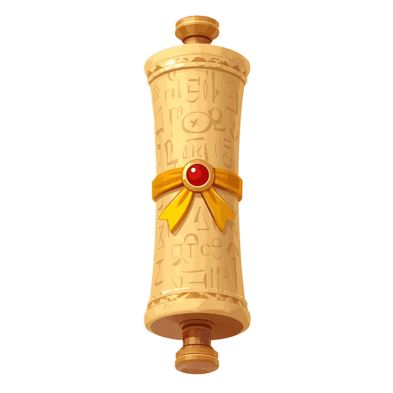

Please enter the access code from your Etsy purchase README to begin the adventure.
Your code is printed on the "Getting Started" page inside your Etsy bundle.
Lost your code? Email janerasika20@gmail.com
Moses' Escape to Midian
Interactive Bible Adventure
Sneak past Pharaoh's guards. Solve Bible gates. Reach freedom.

SCENE 1 - THE PALACE
★ Personal Best
🏺 Collections
🎯 Progress
The Story So Far
Moses is a prince in Pharaoh's palace — but God has a special plan for him!
Help Moses sneak past the guards, solve clever Bible gates, and escape into
the wilderness for the adventure of a lifetime. Can you guide him to freedom?
"By faith he left Egypt, not fearing the king's anger; he persevered because he saw him who is invisible."
- Hebrews 11:27 (NIV)
Level
Time
What to expect
Easy
4 min
Gentle pace · forgiving
Medium
3 min
Sharper challenges
Hard
4 min
Faster foes · tightest run
Set your level in the panel above ↑
Loading game assets... 0%
Preparing the Palace…
Loading sprites and music — please wait a moment.
0%
Tip: hide behind a pillar to break a guard's line of sight.
Loading...
CINEMATIC OPENING
1 of 4
Moses's Journey
From Egypt to Midian — one step at a time.
The desert calls. Press on, Moses.
♥♥♥
00/3🛡️0/33:00
⚡
S = StartExitYouGuard? Gate✓ SolvedTreasure
Tap anywhere to close
Exodus 2:13-15a (NIV)
THE PALACE
x:0 y:0
[?]
How to Play
Loading...
1 of 3
👋
Tip
…
...
...
Caught!
...
Paused
The adventure waits for you.
Tip: Hide behind pillars [#] to avoid guards!
BIBLE CHALLENGE GATE
Answer to pass!
💡 Bible Clue:
*** God had a plan for Moses. ***
And God has a plan for you, too.
SCENE 1 COMPLETE
Moses has reached the palace gate!
You did it!
What's your name, brave explorer?
Moses reached safety!
Well done!
You are brave just like Moses.
"Be strong and courageous. Do not be afraid; do not be discouraged,
for the Lord your God will be with you wherever you go."
— Joshua 1:9
★★★
BRAVE EXPLORER
★ NEW PERSONAL BEST ★
0 Score0/0 Treasures3/3 Hearts
Up next — Moses heads into the desert. Get ready for Scene 2!